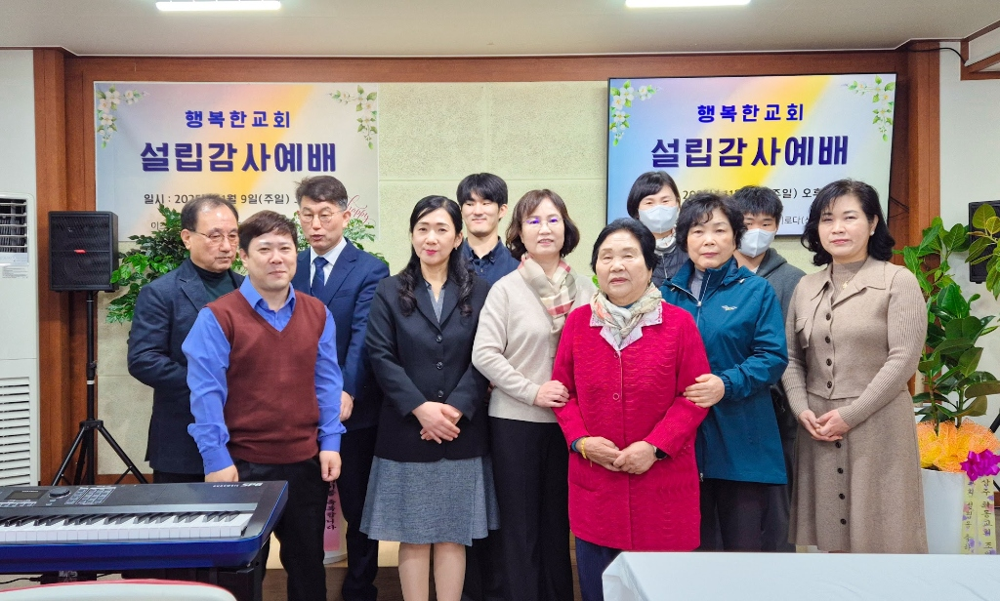

날마다 예수 그리스도로 행복을 경험하는 공동체
행복한교회는 예수 그리스도 안에서 참된 행복을 발견하고,
그 행복을 지역 사회와 이웃에게 나누는 사랑의 공동체입니다.

행복한교회는 2017년 12월, 경북 문경 땅에 하나님의 나라를 확장하고 영혼을 구원하는 사명을 띠고 첫 예배를 드렸습니다.
설립 당시의 뜨거웠던 은혜와 감동을 잊지 않고, 지금도 오직 복음의 능력으로 한 영혼 한 영혼을 귀하게 여기며 예수 그리스도의 사랑을 전하고 있습니다.
살아있는 하나님의 말씀을 배우는 교회
삶 속에서 말씀대로 실천하는 교회
지역 사회를 섬기며 행복을 나누는 교회